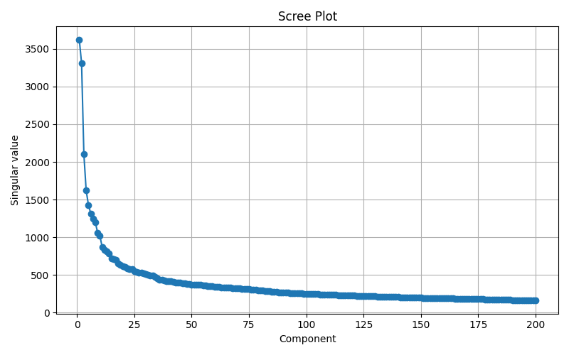
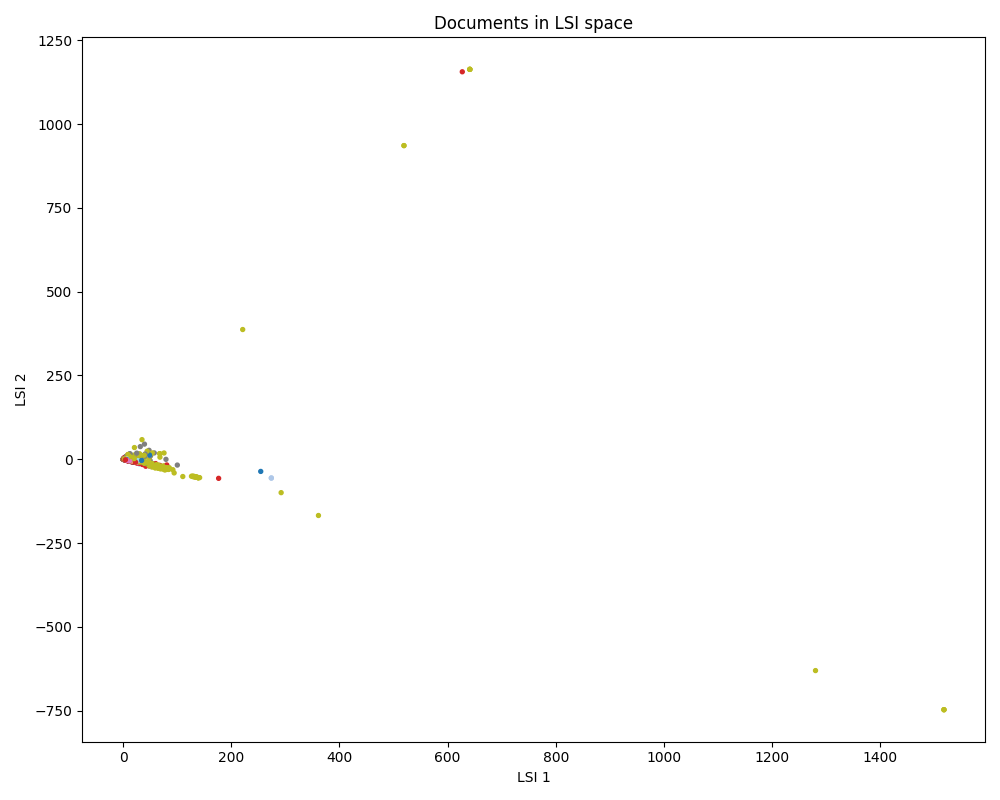
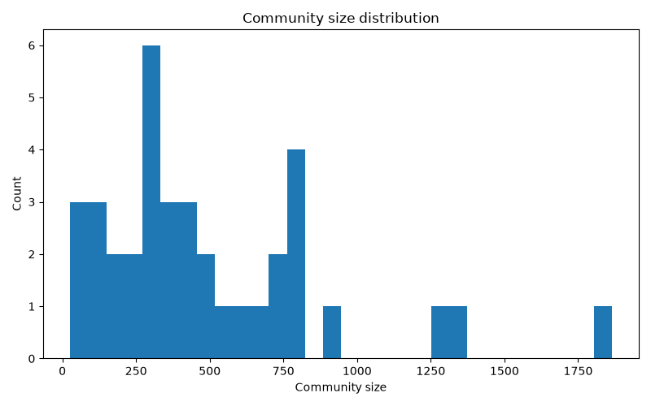
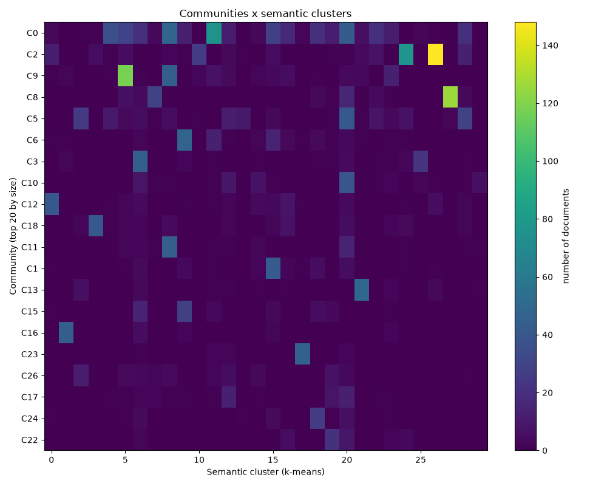
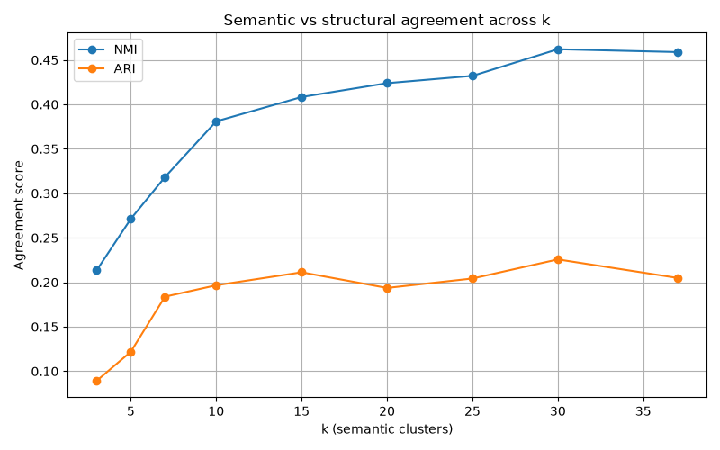
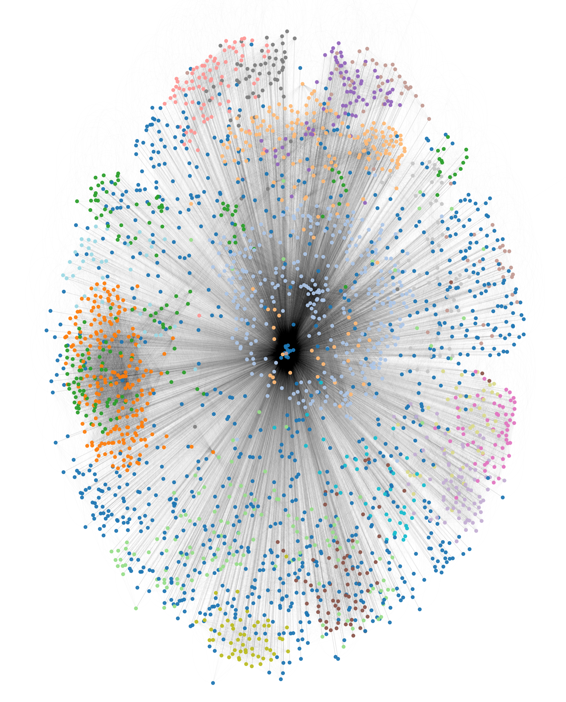
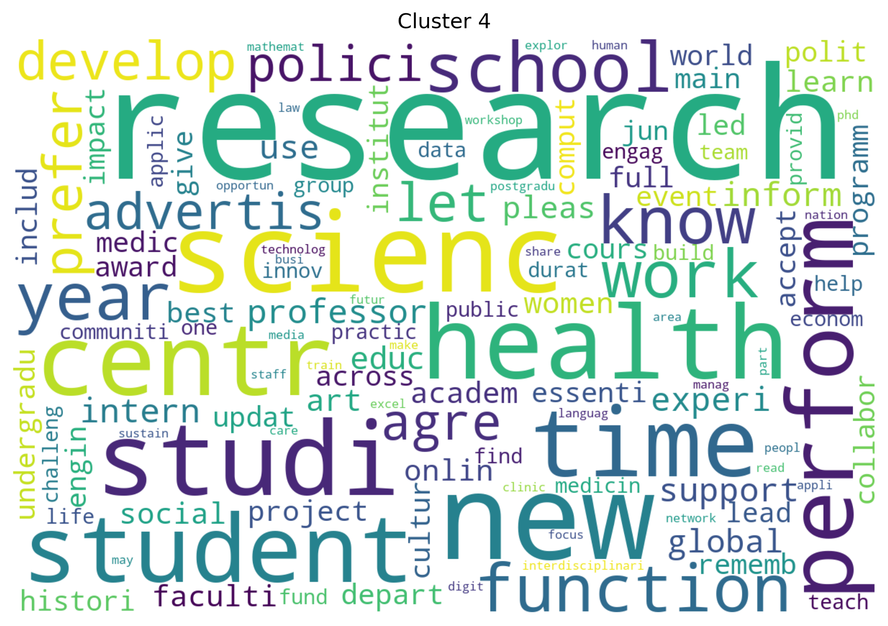
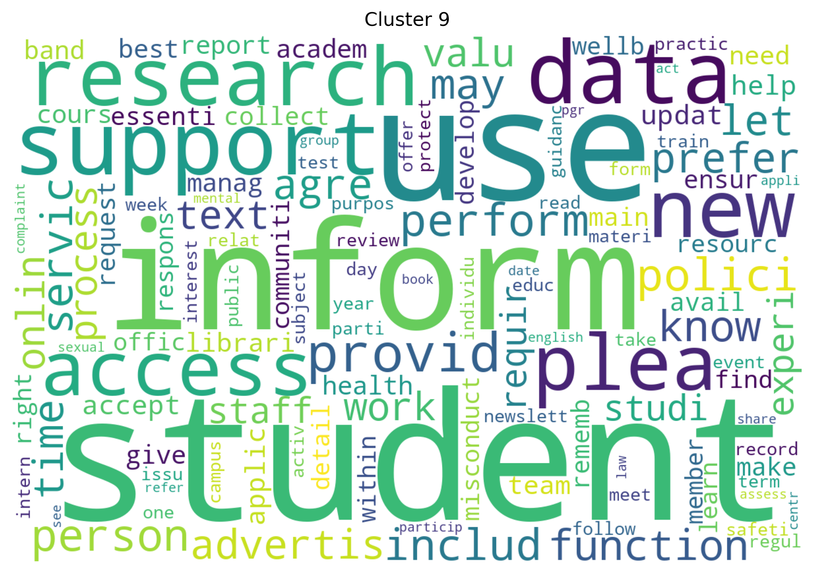

Zadanie 2. Analiza semantyczna i strukturalna dokumentów webowych
Z1. Preprocessing i macierz term-document (TDM)
Wyniki i metryki:
- Rozmiar macierzy (t×d): 5856 × 2610
- Procent elementów niezerowych (sparsity): 1.1%
| Lp. | Top 20 termów wg IDF (najbardziej specyficzne) |
Wartość IDF | Top 20 termów wg TF (najczęściej występujące) |
Suma TF |
|---|---|---|---|---|
| 1 | aba | 6.2577 | cours | 10250.5 |
| 2 | ace | 6.0753 | modul | 10213.5 |
| 3 | abba | 5.9212 | msc | 8274.1 |
| 4 | affirm | 5.7877 | fee | 8028.1 |
| 5 | abandon | 5.6699 | applic | 7963.5 |
| 6 | accident | 5.5645 | research | 7845.0 |
| 7 | aca | 5.4692 | postgradu | 7415.4 |
| 8 | absorb | 5.3822 | requir | 6499.2 |
| 9 | andrea | 5.3022 | appli | 6208.3 |
| 10 | abid | 5.2280 | career | 6087.6 |
| 11 | adjac | 5.1591 | student | 6045.2 |
| 12 | accid | 5.0945 | year | 5868.9 |
| 13 | alik | 5.0339 | school | 5547.7 |
| 14 | accustom | 4.9767 | studi | 5521.5 |
| 15 | abstract | 4.9227 | data | 5110.9 |
| 16 | antimicrobi | 4.8714 | accommod | 5061.6 |
| 17 | aliv | 4.8226 | scienc | 5037.8 |
| 18 | adher | 4.7761 | educ | 4835.3 |
| 19 | arrow | 4.7316 | visa | 4811.6 |
| 20 | aesthet | 4.6891 | live | 4767.6 |
🧭 Orientacja
Stemming ujednolica formy słów, stop words odfiltrowują szum, próg 50 tokenów odrzuca puste strony, a TF-IDF waży termy wg częstości i rzadkości.
Rozwiń pełne wyjaśnienie AI
Stemming sprowadza słowa do wspólnego rdzenia, żeby różne formy tego samego słowa liczyły się jako jedno. Stop words usuwają słowa tak częste, że nie niosą informacji — bez tego zdominowałyby macierz. Próg min. 50 tokenów po usunięciu HTML i stop words odsiewa strony typu "404" czy samą nawigację. TF-IDF waży termy: TF = jak często słowo występuje w danym dokumencie, IDF = jak rzadkie jest ono w całym zbiorze.
🔨 Budowa
Pipeline: crawler.py → preprocessing.py → tdm.py. AI dobrało uczciwy User-Agent crawlera i stop-listy dopasowane do serwisu.
Rozwiń szczegóły budowy
Pipeline: crawler.py (pobiera strony z graph.json), preprocessing.py (czyści HTML), tdm.py (buduje macierz TF-IDF). AI zaproponowało User-Agent "Mozilla/5.0 (compatible; research-crawler/1.0)" — kompromis między przepuszczalnością przez serwery a uczciwym oznaczeniem crawlera. Zasugerowało też stop-listę tylko angielską (strona uczelni jest w 100% po angielsku) plus dodatkowe stopwords specyficzne dla serwisu, np. "cookies", "privacy" ze stopki.
✅ Walidacja
98.9% macierzy jest zerowe — zgodnie z oczekiwaniami. Identyczny IDF dla top 20 termów wyjaśniony progiem MIN_DF=5, a nie błędem.
Rozwiń pełną walidację
98.9% zerowych elementów — zgodne z oczekiwaniami, żaden dokument nie zawiera całego słownika. Wszystkie top-20 termów mają identyczny IDF=6.2577, bo wszystkie wystąpiły w dokładnie 5 dokumentach (próg MIN_DF=5): log(2610/5)=6.2577 — to nie błąd, tylko alfabetyczny przypadek (słowa na "a"). Znaleziono też śmieciowe termy: fals (z atrybutów HTML) i chat (z widgetu) — dodane do stop words. "tag" i "open" przetrwały mimo dodania do stop words, bo filtrowanie działo się przed stemmingiem — poprawka: filtrować stop words po stemmingu.
Z2. LSI — redukcja wymiaru (SVD)


Zachowana wariancja dla testowanych k:
| k | 10 | 20 | 50 | 100 | 200 |
|---|---|---|---|---|---|
| Frakcja wariancji | 57.58% | 65.64% | 75.55% | 82.68% | 88.73% |
🧭 Orientacja
SVD redukuje wymiarowość macierzy term-document do ukrytych „tematów"; Truncated SVD robi to samo taniej, zachowując większość informacji.
Rozwiń pełne wyjaśnienie AI
SVD redukuje liczbę wymiarów macierzy term-document, znajdując ukryte wymiary opisujące wzorce współwystępowania słów, zamiast pojedynczych termów. Truncated SVD ogranicza liczbę tych wymiarów, bo większość informacji mieści się w niewielkiej ich części — resztę można odrzucić bez dużej straty dokładności.
🔨 Budowa
Truncated SVD ze scikit-learn; punkty na wykresie 2D pokolorowane wg podkatalogu strony.
Rozwiń szczegóły budowy
Truncated SVD z scikit-learn; wariancja dla kolejnych k liczona bezpośrednio z wyniku SVD. Punkty na wykresie 2D pokolorowane wg podkatalogu strony — kod wymagał tylko uporządkowania na osobne metody.
✅ Walidacja
Elbow przy k≈15-20; większość dokumentów tworzy zwarte skupisko, z kilkoma naturalnymi outlierami (np. strona z listą studiów podyplomowych).
Rozwiń pełną walidację
Elbow przy k≈15-20 wskazuje niską efektywną wymiarowość korpusu i dobrze zorganizowaną strukturę tematyczną. Większość dokumentów tworzy zwarte skupisko blisko środka przestrzeni LSI (podobieństwo semantyczne stron), a pojedyncze outliery to strony o specyficznej treści lub dużej objętości tekstu, silnie rzutowane na pierwsze składowe. Pierwsza oś LSI jest zdominowana przez słowa "msc", "durat", "postgradu" — najwyższą wartość tej składowej ma strona z listą studiów podyplomowych (warwick.ac.uk/study/postgraduate/courses), co potwierdza sensowność interpretacji tego wymiaru.
⚡ Z3. Grupowanie semantyczne — k-means w przestrzeni LSI
Metoda Łokcia (WCSS vs k) — zakres rozszerzony do k=37
Indeks Sylwetki (Silhouette vs k) — zakres rozszerzony do k=37
Wybrane k: 30 (dawniej 15 — najlepsze z pierwotnego, węższego zakresu testów)
Przykładowe klastry dla k=30 (Top termy i przykładowe dokumenty) — te same klastry pojawiają się dalej w analizie zgodności w Z5:
- Klaster 26 — top termy: modul, fee, msc, cours, cost, career, postgradu, tuition, option, core — kursy podyplomowe (por. Z5: community 2 / cluster 26).
- Klaster 27 — top termy: requir, appli, visa, grade, tuberculosi, guidanc, differenti, immigr, foundat, scholarship — wymogi wizowe / informacje per kraj (por. Z5: community 8 / cluster 27).
- Klaster 2 — top termy: apprenticeship, apprentic, levi, degre, employ, engin, skill, job, standard, train — bardzo czysty, wąsko zdefiniowany temat (apprenticeships), najwyższa waga top-termu ze wszystkich klastrów (0.62).
🧭 Orientacja
k-means uruchomiony na znormalizowanych wektorach LSI, co w praktyce daje efekt zbliżony do spherical k-means — lepszy dla danych tekstowych.
Rozwiń pełne wyjaśnienie AI
k-means uruchomiony na znormalizowanych wektorach LSI, bo wtedy odległość euklidesowa staje się równoważna podobieństwu cosinusowemu — efekt zbliżony do spherical k-means, zalecanego dla danych tekstowych. Prawdziwy spherical k-means dodatkowo normalizuje centroidy po każdej iteracji i liczy przypisania wprost przez cosine similarity.
⚡ 🔨 Budowa (Algorytm Rdzeniowy!)
Własna implementacja k-means i WCSS (wymagane zadaniem) — losowe centroidy, przypisanie do najbliższego, aktualizacja średniej, reinicjalizacja pustych klastrów.
Rozwiń kroki algorytmu
Sami zaimplementowaliśmy rdzeń algorytmu: losowe centroidy startowe → pętla do zbieżności (przypisz każdy dokument do najbliższego centroidu euklidesowo, przesuń centroid do średniej klastra) → WCSS jako suma kwadratów odległości w klastrze. AI doradziło wektoryzację przez numpy (znacznie krótszy kod) i reinicjalizację centroidu przy pustym klastrze.
✅ Walidacja
sklearn, dopiero co przeliczony na pełnym zakresie do k=37, niezależnie potwierdza k=30 jako najlepsze. Przy wyższych k sklearn systematycznie daje wyższy silhouette niż własna implementacja — i, co ważne, w wersji sklearn spadek przy k=37 jest znikomy, w przeciwieństwie do nieco wyraźniejszego spadku we własnej implementacji.
Rozwiń pełną walidację
Po odkomentowaniu wywołania sklearn i przeliczeniu go na pełnym, rozszerzonym zakresie (k=3...37) sklearn niezależnie wybrał Best k = 30 — dokładnie to samo, co wcześniej wskazała własna implementacja. To mocne potwierdzenie: dwie różne implementacje k-means zgadzają się co do najlepszego k.
WCSS zgadza się bardzo dobrze na całym zakresie (różnice 0-3.4%, sklearn systematycznie odrobinę niższy — spodziewane, bo `n_init=10` daje mu więcej szans na trafienie lepszego rozwiązania). Silhouette natomiast rozjeżdża się bardziej niż na wąskim zakresie: przy wyższych k (20, 25, 30, 37) sklearn daje wyraźnie wyższe wartości niż własna implementacja (różnice 8-14%, nie tylko przy k=7 jak wcześniej). To sugeruje, że problem pojedynczego losowego startu (bez wielokrotnych prób jak w sklearn) staje się bardziej dotkliwy przy większej liczbie klastrów — więcej klastrów to więcej okazji, żeby jeden zły start zepsuł wynik.
Ważna nowa obserwacja: spadek silhouette przy k=37 (który we własnej implementacji wyglądał na wyraźny sygnał "przeklastrowania": 0.186→0.176, spadek o 4.9%) w wersji sklearn jest praktycznie niezauważalny (0.2005→0.2004, spadek o 0.05% — statystycznie nieodróżnialne). Oznacza to, że wcześniejszy wniosek "silhouette realnie spada przy k=37" był częściowo artefaktem jednorazowego losowego startu we własnej implementacji, a nie w pełni potwierdzonym zjawiskiem. Sklearn sugeruje raczej, że jakość klastrowania płaskoszczytuje gdzieś w okolicach k=30-37, niż że k=37 jest wyraźnie gorsze. Wniosek "k=30 to najlepszy wybór" pozostaje trafny (oba potwierdzają to samo najlepsze k), ale silniejsza wersja wniosku ("k=37 jest gorsze, bo model się przeklastrowuje") wymaga ostrożniejszego sformułowania — dobrym krokiem na przyszłość byłoby przeliczenie też porównania NMI/ARI z Z5 na klastrowaniu ze sklearn zamiast własnej implementacji, żeby sprawdzić, czy tamten spadek przy k=37 również przetrwa czy okaże się podobnym artefaktem.
Z4. Grupowanie strukturalne — community detection
Użyty algorytm: Louvain | Liczba communities: 37 | Modularity Q: 0.61

[Histogram rozmiarów communities oraz opis Top-3 największych grup]🧭 Orientacja
Community detection znajduje grupy stron gęsto połączonych linkami. Louvain maksymalizuje modularity Q; Q=0.61 oznacza wyraźną strukturę grup.
Rozwiń pełne wyjaśnienie AI
Community detection szuka grup stron gęsto połączonych linkami — takich, które linkują częściej do siebie niż do reszty grafu. Louvain (algorytm nieskierowany, więc kierunek krawędzi trzeba zignorować lub użyć wariantu directed) dzieli graf tak, by zmaksymalizować modularity Q — miarę tego, o ile lepszy jest ten podział od losowego. Q w okolicach 0.3-0.7 oznacza sensowną, wyraźną strukturę grup.
🔨 Budowa
Wybrano Louvain zamiast label propagation, bo ten drugi jest niedeterministyczny i nie maksymalizuje wprost modularity.
Rozwiń uzasadnienie wyboru
Label propagation jest szybsze niż Louvain, ale niedeterministyczne (różne uruchomienia dają różne podziały) i nie maksymalizuje modularity wprost — stąd wybór Louvain. Wynik: Q, liczba communities i Top-3 największe zapisane w /reports jako plik tekstowy, plus histogram rozmiarów jako png.
✅ Walidacja
Większość communities ma rozmiar 0-800 dokumentów, z trzema wyraźnymi outlierami — typowy wzorzec kilku hubów tematycznych.
Rozwiń pełną walidację
Większość community ma rozmiar w przedziale 0-800, a potem trzy wyraźne outliery w prawym ogonie. To częsty wzorzec w grafach webowych: kilka hubów tematycznych.
⚡ Z5. Porównanie: semantyczne vs strukturalne


Analiza przypadków (Huby i anomalie):
-
🤝 Zgoda (Struktura linków odpowiada treści):
-
Community 2 / Cluster 0 (276 dok.)
Przykłady:/study/postgraduate/apply/...,/study/international/admissions/...
Interpretacja: Strony ściśle związane z procesem rekrutacji. -
Community 9 / Cluster 6 (170 dok.)
Przykłady:/alumni/alumni-news/...
Interpretacja: Aktualności i wiadomości przeznaczone dla absolwentów. -
Community 8 / Cluster 0 (130 dok.)
Przykłady:/study/international/countryinformation/...
Interpretacja: Informacje dedykowane konkretnym krajom. Współdzielą ten sam klaster tematyczny co C2, lecz wydzielone zostały do osobnej społeczności (podsekcja strukturalna).
-
Community 2 / Cluster 0 (276 dok.)
-
⚠️ Niezgoda (Treść rozproszona po strukturze):
-
Cluster 4 (Rozsiany po 32 społecznościach)
Przykłady:/about/contact,/accessibility,/library,/study/complaintsprocedure -
Cluster 1 (Rozsiany po 27 społecznościach)
Przykłady:/maps,/about/visiting,/bookshop,/events -
Cluster 3 (Rozsiany po 27 społecznościach)
Przykłady:/research/data-science,/departments/a2z,strona główna
-
Cluster 4 (Rozsiany po 32 społecznościach)
-
🌐 Huby nawigacyjne (Wysoki stopień wejściowy):
Podgląd stron:
/privacy,/cookies,/accessibility,/copyright,/terms/general📈 Metryki: Stopień węzłów (Degree) ~3000–3015. Wszystkie należą do Cluster 4, ale są rozbite na różne społeczności (0, 3, 6).
💡 Wniosek: Są to klasyczne strony techniczne linkowane globalnie w stopce każdej podstrony serwisu.
Zgodność NMI/ARI dla pełnego, rozszerzonego zakresu k:
| k | 3 | 5 | 7 | 10 | 15 | 20 | 25 | 30 | 37 |
|---|---|---|---|---|---|---|---|---|---|
| NMI | 0.214 | 0.271 | 0.318 | 0.381 | 0.408 | 0.424 | 0.432 | 0.462 | 0.459 |
| ARI | 0.089 | 0.122 | 0.184 | 0.197 | 0.211 | 0.194 | 0.204 | 0.226 | 0.205 |
🧭 Orientacja
NMI mierzy, ile mówi klaster semantyczny o community strukturalnej (i odwrotnie); znormalizowane do [0,1], więc można nim porównywać podziały o dowolnie różnej liczbie grup — u nas od 3 do 37 klastrów z 37 communities.
Rozwiń pełne wyjaśnienie AI
NMI (znormalizowane mutual information) mierzy, ile przynależność do klastra semantycznego mówi o przynależności do community strukturalnej, i odwrotnie — im mocniej pary (klaster, community) współwystępują częściej niż przy losowym podziale, tym wyższy wynik. Normalizacja sprowadza go do [0,1] niezależnie od liczby grup, więc można nim porównywać podziały o zupełnie różnej liczbie grup — u nas dowolne k (od 3 do 37 klastrów) z 37 communities: 0 = brak związku, 1 = podziały identyczne.
⚡ 🔨 Budowa NMI (Alg. Rdzeniowy!)
NMI zaimplementowane samodzielnie wg wzoru (rozkłady, rozkład wspólny, mutual information, entropia) i zweryfikowane wobec sklearn.
Rozwiń kroki implementacji
Implementacja wg wzoru: prawdopodobieństwa klastrów i communities (liczność grupy / N) → rozkład wspólny (zliczenie par etykiet (klaster, community) dla każdego dokumentu) → mutual information I(U;V) jako suma po parach z porównaniem do rozkładu niezależnego → wynik = 2·I / (H_u + H_v), gdzie H to entropia podziałów. Zweryfikowane wobec sklearn.normalized_mutual_info_score.
🔨 Budowa heatmapy
Histogram 2D par (community, klaster). Wcześniej liczony dla zahardkodowanego k=7 niezależnie od zakresu NMI/ARI — poprawione: k dobierane automatycznie jako argmax NMI (teraz k=30).
Rozwiń szczegóły
Budowa jest bardzo prosta — parujemy etykiety każdego dokumentu: jego community c i jego klaster k. Następnie dla każdego dokumentu zwiększamy licznik w odpowiedniej komórce, czyli budujemy histogram 2D: ile dokumentów ma daną kombinację (community, klaster). Pierwotnie k do tego szczegółowego porównania było ustawione na sztywno jako stała `BEST_K_FOR_HEATMAP=7` w configu, niezależnie od tego, jaki zakres k testowała pętla NMI/ARI — więc rozszerzenie zakresu do 37 w ogóle nie zmieniało heatmapy. Poprawka: `best_k = max(agreement_results, key=lambda r: r["nmi"])["k"]` — k do szczegółowej analizy jest teraz liczone automatycznie jako to, które daje najwyższe NMI, więc zawsze jest spójne z wykresem NMI/ARI.
✅ Walidacja
Zgodność rośnie do k=30, a przy k=37 spada — ale (patrz Z3) analogiczny spadek silhouette okazał się artefaktem jednorazowego uruchomienia k-means, więc ten wniosek wymaga jeszcze potwierdzenia na klastrowaniu ze sklearn.
Rozwiń pełną walidację
Po rozszerzeniu zakresu k do 37 (czyli dokładnie tyle, ile jest communities) zgodność rośnie monotonicznie tylko do k=30 (NMI=0.462, ARI=0.226), po czym przy k=37 spada (NMI=0.459, ARI=0.205). Testowaliśmy w ten sposób hipotezę, czy niska zgodność wynika głównie z różnej granulacji podziałów (mniej klastrów semantycznych niż communities) — gdyby tak było, zgodność powinna rosnąć aż do zrównania liczby grup. Zamiast tego szczyt wypada wcześniej, a przy pełnym zrównaniu granulacji (k=37) zgodność się pogarsza, co wskazywałoby na przeklastrowywanie danych powyżej k≈30. Zastrzeżenie: etykiety klastrów użyte tu do NMI/ARI pochodzą z tej samej, jednorazowej implementacji k-means, dla której w Z3 spadek silhouette przy k=37 okazał się dużo słabszy (praktycznie zniknął) po przeliczeniu przez sklearn z wielokrotnym restartem. Możliwe więc, że część tego spadku NMI/ARI to podobny artefakt niestabilności pojedynczego losowego startu, a nie w pełni potwierdzone zjawisko przeklastrowywania — wymagałoby to powtórzenia porównania na etykietach ze sklearn. ARI pozostaje systematycznie niższe niż NMI na całym zakresie, bo liczy zgodność parami dokumentów, a jedna nieproporcjonalnie duża community (~1864 węzłów) mocno je za to karze; NMI, oparte na entropii, jest mniej wrażliwe na ten nierówny rozkład rozmiarów. Wartości 0.2-0.46 są zresztą typowe dla serwisów webowych, gdzie nawigacja (stopka, menu) tworzy gęste linki niezależne od treści.
Z6. Wizualizacja i podsumowanie

Struktura (Communities)

🔨 Budowa i ✅ Walidacja
Grafy i chmury słów zbudowane w matplotlib/wordcloud, po usunięciu wierzchołków spoza TDM. Niektóre klastry semantyczne dobrze pokrywają się z community (np. 0.981 dla sekcji international), inne przenikają się z powodu płynnych granic tematów.
Rozwiń pełny opis
Grafiki w matplotlib i wordcloud. Wierzchołki spoza TDM usunięto — obniżały czytelność i tak nie podlegały analizie semantycznej. Na kolorowanych grafach część communities pokrywa się dobrze z klastrami semantycznymi (np. sekcja study/international/ — zgodność 0.981), ale inne klastry przenikają się z wieloma communities naraz, bo granice tematów są płynne (np. wokół terminu "student"). Wykres community pokazuje wyraźne, mocno powiązane podgrupy — typowe dla serwisów z podwitrynami dla poszczególnych jednostek administracyjnych.
Z7. Metoda dodatkowa (bonus)
Wybrana metoda: GMM
| Model / Metoda | Silhouette | NMI | ARI |
|---|---|---|---|
| k-means (Baseline) | 0.0924 | 0.4083 | 0.2113 |
| GMM (Gaussian Mixture Models) | 0.0552 | 0.3256 | 0.1002 |
🧭 Orientacja
Wybrano GMM: łatwe porównanie z k-means, prosta implementacja w Pythonie, przypisanie miękkie (prawdopodobieństwa) zamiast twardego.
Rozwiń pełne wyjaśnienie AI
Wybrano GMM (łatwy do porównania z k-means, prosty w implementacji). Każdy klaster to rozkład normalny, a punkt może należeć do wielu klastrów z różnym prawdopodobieństwem. Algorytm EM w każdej iteracji liczy prawdopodobieństwo przynależności punktu do klastra k, a potem aktualizuje średnie, kowariancje i wagi.
✅ Walidacja
k-means przewyższa GMM na obu metrykach — wskazuje to na twarde, dobrze rozdzielone granice tematów zamiast nakładających się rozkładów.
Rozwiń pełną walidację
k-means przewyższa GMM zarówno na silhouette, jak i na zgodności ze strukturą grafu (NMI, ARI). Wskazuje to, że przestrzeń LSI jest bardziej separowalna niż nakładająca się — struktura tematyczna serwisu jest bliższa twardym granicom niż mieszaninie rozkładów, bo LSI + TF-IDF już dobrze separuje klastry, więc GMM nie ma czego modelować.
Z8. Refaktoryzacja i dokumentacja współpracy z AI
🛠️ Zastosowane usprawnienia architektoniczne:
-
1. Decentralizacja konfiguracji (Wprowadzenie config.py)
Parametry były pierwotnie rozproszone po wielu plikach źródłowych:
•Rezultat: Wydzielenie jednego wspólnego pliku
MIN_DF=5,MAX_DF_RATIO=0.95wz1_tdm.py
•DELAY=0.5,TIMEOUT=10wfetch_pages.py
•KS = [3, 5, 7, 10, 15, 20, 25, 30, 37]wconfig.pyrozszerzone z [3,5,7,10,15] po odkryciu, że silhouette rosło monotonicznie do końca pierwotnej listy)
•N_COMPONENTS=200wz2_truncated_svd.pyconfig.pywyeliminowało potrzebę przeszukiwania kodu w celu zmiany parametrów eksperymentu (np. liczby klastrów k). -
2. Naprawa pliku orchestratora (main.py)
Skrypt
main.pyjedynie wczytywał graf i kończył działanie.
Rezultat: Przeprojektowano plik tak, aby pełnił rolę głównego kontrolera zarządzającego całym potokiem przetwarzania danych (*pipeline*). -
3. Dekompozycja zbyt dużych modułów
Skrypt
z5_comparison.pyposiadał aż 369 linii kodu i łamał zasadę pojedynczej odpowiedzialności (obliczał metryki NMI/ARI, budował macierze pomyłek, generował wykresy i analizował przypadki).
Rezultat: Dokonano podziału na niezależne moduły:metrics.pyorazcomparison_plots.py.
💡 Odrzucone usprawnienia:
-
• Zastąpienie autorskich metryk bibliotekami
Własne implementacje NMI oraz ARI w
z5_comparison.pydziałają w 100% poprawnie, lecz docelowo stabilniejsze i bezpieczniejsze byłoby użycie gotowych funkcji z pakietusklearn.metrics. -
• Wielokrotne i redundantne I/O dyskowe
Pliki
corpus.jsonorazlsi_documents.npysą ładowane niezależnie przez skrypty z5, z6_* oraz z7. Przy zbiorze ok. 1000 dokumentów nie stanowi to problemu wydajnościowego, jednak przy większej skali konieczne będzie wdrożenie mechanizmu buforowania (*caching*). -
• Optymalizacja implementacji k-means
Własna implementacja k-means w
z3_k_means.pyuruchamia pętlę w czystym Pythonie z Euclidean distance liczoną ręcznie. Dla dużej liczby dokumentówsklearn.cluster.KMeansbędzie istotnie szybszy.
Wnioski z pracy z AI
Podczas pracy nad projektem zauważyliśmy, że sposób formułowania promptów ma istotny wpływ na otrzymywane odpowiedzi. W sytuacjach, gdy przesyłaliśmy fragment kodu z prośbą o jego poprawę, model interpretował to jako konieczność wprowadzenia zmian za wszelką cenę. W efekcie zdarzało się, że sugerowane poprawki były naciągane, zamiast informacji, że np. dany kod nie wymaga modyfikacji.
Podział pracy na role (takie jak tutor, partner czy asystent) oraz sama struktura projektu okazały się interesującym eksperymentem. Wcześniej korzystaliśmy z AI w zbliżony sposób, choć mniej sformalizowany. Naturalnie traktujemy AI jako narzędzie do dyskusji - często prosimy o wyjaśnienia, analizujemy różne podejścia i konfrontujemy rozwiązania.